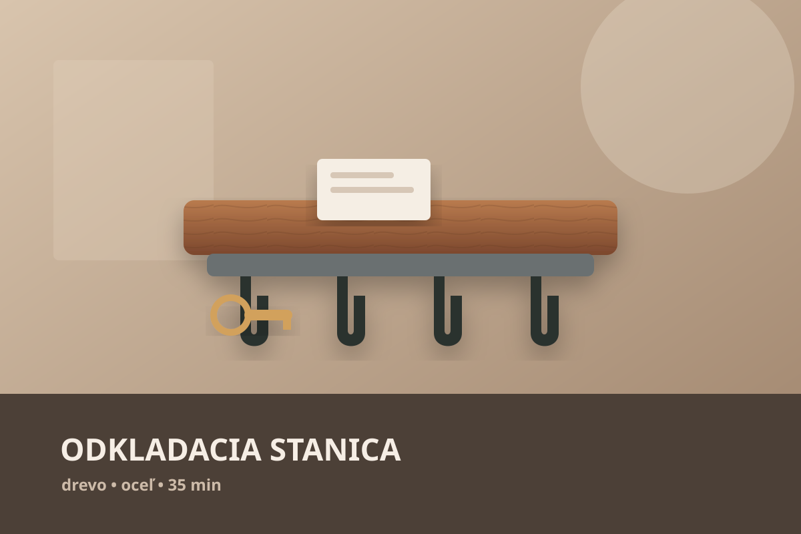

Materiál
- zadná drevená doskacca 32 × 55 cm
- horná poličkacca 28 × 8 cm
- diely spodnej vaničkydrevo 10–18 mm
- čierne háčiky5 ks
- neodýmové magnety1–3 ks
- olej / matný lakpovrchová úprava
NOVÝ PROJEKT · DOMÁCNOSŤ
Kompaktný vstupný organizér z dreva a čierneho kovu. Päť háčikov, horná polička, spodná vanička a skrytý magnetický bod na veci, ktoré chceš odložiť jedným pohybom.
 SCHVÁLENÝ MASTER VIZUÁL
SCHVÁLENÝ MASTER VIZUÁL
ČO MÁ VYRIEŠIŤ
Projekt kombinuje odkladanie, zavesenie aj magnetické prichytenie. Cieľom nie je dekorácia, ale malá stanica pri dverách, ktorú človek začne používať automaticky každý deň.
drevo + čierny kov
5 háčikov + magnet
MATERIÁL & NÁRADIE
Rozmery ešte doladíme podľa finálneho master vizuálu. Konštrukčný princíp však zostane rovnaký.
PRACOVNÝ POSTUP
Toto je základ návodu. Fotorealistické obrázky budeme v ďalších krokoch nahrádzať konzistentnou sériou a pri vybranom úkone pridáme krátke Higgsfield video.

NÁVRH
Vyznač hornú poličku, päť háčikov, spodnú vaničku a magnetickú zónu. Pred vŕtaním si over rozostupy podľa reálnych zväzkov kľúčov.
REZANIE
Rež všetky diely v jednej etape a označ si ich ešte pred odložením. Rovnaká šírka dielov výrazne uľahčí následnú montáž.
BRÚSENIE
Najprv odstráň stopy po rezaní, potom jemne zraz ostré hrany. Finálny povrch bude pôsobiť podstatne čistejšie.
VANIČKA
Nasucho si diely zlož, potom ich zlep a stiahni svorkami. Vanička má byť plytká, aby boli veci viditeľné a dali sa chytiť jednou rukou.
POLIČKA
Vyrovnaj ju do pravého uhla k zadnej doske a upevni skrytým spojom alebo skrutkami zo zadnej strany.
KOV + MAGNET
Rozmeraj päť rovnakých pozícií pre háčiky. Magnety vlož zo zadnej strany tak, aby z čelnej strany neboli viditeľné.
FINÁLE
Nanesi povrchovú úpravu, nechaj ju vytvrdnúť a organizér pevne ukotvi. Až potom ho naplň bežnými vecami a uprav rozloženie podľa reálneho používania.
Pri kroku 06 pripravíme krátku image-to-video ukážku: ruka zavesí zväzok na háčik a druhý zväzok sa jemne prichytí na skrytý magnet. Ak bude konzistencia produktu dobrá, tento spôsob použijeme aj pri ďalších návodoch.
ĎALŠIA ETAPA
Tento schválený obrázok bude vizuálnou kotvou celého návodu. Z neho budeme postupne odvádzať konzistentné obrázky jednotlivých krokov a prvý krátky pohyb cez Higgsfield.
Späť na postup ↑